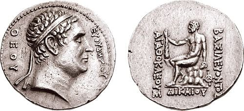

Coinage in Ancient Greece
A
There are more than 170 official national currencies currently in circulation around the world and while they may differ greatly in value, most show a high degree of commonality when it comes to their design. Typically, a coin or banknote will feature the effigy of a notable politician, monarch or other personality from the country of origin on one side and a recognisable state symbol (e.g. a building or an animal) on the reverse. This pattern, which has been around for more than 21 centuries, originated in ancient Greece.
B
Prior to the invention of legal tender, most transactions in the ancient world took the form of trading a product or service for another. As sea trade grew in the Mediterranean, however, the once-popular barter system became hard to maintain for two reasons: firstly, because it was tricky to calculate the value of each item or service in relation to another, and secondly, because carrying large goods (such as animals) on boats to do trade with neighbouring cities was difficult and inconvenient. Therefore, the need soon arose for a commonly recognised unit that would represent a set value-what is known today as a currency. As Aristotle explains in Politics, metal coins naturally became the most popular option due to the fact that they were easy to carry, and didn't run the risk of expiring. According to ancient Greek historian Herodotus, the first coins were invented in 620 BC in the town of Lydia, although some theorise that they actually originated in the city of Ionia. (Coins had already existed for nearly 400 years in China, unbeknownst to Europeans.).
C
Much like with every other form of ancient Greek art, the history of ancient Greek coins can be divided into three distinct chronological periods: the Archaic (600-480 BC), the Classic (480-330 BC) and the Hellenistic Period (330-1st century BC). As ancient Greece was not a united country like today, but rather comprised of many independent city-states known as poleis, each state produced its own coins. The island of Aegina was the first to mint silver coins, perhaps adopting the new system upon witnessing how successfully it had facilitated trade for the lonians. Aegina being the head of a confederation of seven states, it quickly influenced other city-states in the Mediterranean and the new method of trade soon became widespread. Up until approximately 510 BC, when Athens began producing its own coin, the Aegina coin - which featured a turtle on its surface was the most predominant in the region.
D
The tetradrachm, Athens's new coin bearing the picture of an owl on its obverse as a tribute to the city's protector, the goddess Athena, brought with it a shift in the world of coinage. Prior to the tetradrachm, Athenians had been using simple iron rods known as 'obols' for currency. As the average human hand could grasp about six obols, that number soon came to represent a 'drachma' (from the Greek verb 'dratto', which means 'to grasp')-so the new tetradrachm had the same value as 24 obols. With Athens continually growing in power, the tetradrachm soon replaced-the Aegina 'turtle' as the most preponderant coin in the region. It was around that time that an agreement akin to the way the EU's euro currency functions also appeared, with different coins from all over the Mediterranean being made to the same standards as the Athenian coin (albeit with each city's own symbols on them) and being used interchangeably among the trading city-states.
E
Coinage soon spread beyond those city-states. Romans abandoned the bronze bars they'd been using in favour of coins around the year 300 BC, and Alexander the Great and his father King Philip of Macedonia began to produce massive quantities of coins to fund their military escapades around the same time. It was with the death of the latter, in 336 BC, that the Hellenistic Period began. Two things characterise the Hellenistic Period: the introduction of a “type” (the design that coins were stamped with) on the reverse of the coins, and mass production, which mostly took place in kingdoms beyond the Greek city-states, such as Egypt, Syria and the far east. Another new feature, which was heavily criticised by the Greeks, was the introduction of profiles of kings and other important living figures as stamps in lieu of the traditional symbols of animals and buildings. Athens, still a powerful city at the time, eschewed these designs and continued to produce its own tetradrachm coins, even introducing-a new-style coin characterised by broad, thin flans-a design which became popular across the Aegean and lasted until the spread of Roman rule over Greece.
F
It's not difficult to see why ancient Greek coins continue to fascinate coin collectors and historians today. They marked the beginning of a new era in business and introduced a model of trade in Europe that is still present nowadays; they greatly influenced the design of modern coinage, with symbols such as the owl (which can be seen on the Greek version of the euro today) and portraits of important personalities; and, since they were hand-made to high technical standards representative of ancient Greek perfectionism, many are even remarkable in their own right, as tiny metal works of art.
Engineering a solution to climate change
A
Looking at the rate of climate change and the disastrous effects it is having on the world, scientists are concerned that we are acting too slowly. Many are now looking to geoengineering — large-scale human interventions to change the world's climate — to counteract global warming. The schemes range from the mundane to science fiction but all come from the same impulse: if we don't do something now, it may be too late to do anything.
B
Climate change is now so rapid that, in the very near future, the Arctic will be ice-free during winter as less ice forms during winters and more melts in summer. Scientists say that tackling climate change isn't a problem we need to deal with in 10 or 20 years' time; we need to look at radical solutions now. A study has shown that the technologies to produce these geoengineering projects already exists and could be in place for around $5 billion a year. This is a bargain when compared with the cost of reducing carbon dioxide emissions, a major greenhouse gas: that figure stands at somewhere between $200 and $2,000 billion.
C
So what exactly are scientists planning to do to deal with global warming in the short term? Among the main schemes are shielding the earth from the sun's rays either at ground or atmospheric level, or capturing the carbon produced by industry and sinking it back into the ground or the sea. Shielding the world has produced ideas that range from simple science to science fiction. One suggestion has been to make the roofs of buildings and roads whiter to reflect the sun's rays back into space. While this has the advantage of simplicity, it simply won't make much difference, reflecting only 0.15 watts per square metre, averaged across the planet. To put this into perspective, to stop earth warming we need to increase heat loss by about 3.7 watts per square metre averaged over the world. Another idea is to protect the Greenland ice field by covering it in giant sheets of reflective material. If this works, it could help in the Antartic where the giant Filchner-Ronne ice shelf is melting rapidly. If this glacier disappears completely, it would raise sea levels, causing catastrophic flood damage around the planet.
D
If reflecting heat back from the ground has little effect, there are two alternatives: seeding clouds and replicating volcanic activity. The first idea is to make clouds whiter by increasing the amount of rain in them. Sending salt particles into clouds should 'seed' the clouds with more raindrops. Clouds carrying more raindrops would be whiter and better reflectors of sunlight. This could be good news for the earth and in addition could be stopped when necessary with the salt completely clear from the skies within ten years. Unfortunately, other research indicates that creating whiter clouds may have unwanted side effects, producing adverse weather conditions in the region and changing ocean currents. A much older idea is to replicate the effect volcanoes have had on the atmosphere. A volcanic eruption sends large amounts of ash and sulphur into the air, which block the sun and create cooler conditions. For example, when Mount Pinatubo erupted in 1991, it produced a sulphur dioxide cloud, which reduced average global temperatures by one degree centigrade. Geoengineers have long put forward the idea of circulating particles of sulphur in the atmosphere to counteract global warming. The particles would be delivered by aircraft or balloons spraying them into the atmosphere. However, this also has unpredictable effects on the amount and pattern of rainfall. Furthermore, this method would delay the recovery of the ozone layer over the Antartic by 30 to 70 years. More ambitious geoengineering projects have included placing billions of reflective balloons between the sun and the earth and putting giant mirrors into orbit. Scientists have criticised these approaches as 'science fiction' and say they are unlikely to happen due to the huge costs involved.
E
Whatever actions we take to block or reflect the heat from the sun, we will still need to reduce the amount of carbon dioxide in the atmosphere. Various geoengineering projects have been proposed to do this. Carbon capture technologies range from planting trees, which naturally use carbon dioxide as they grow, to pumping carbon back into the earth and trapping it there. This is a good idea but would only account for about 0.5 watts per square metre. Carbon capture technologies are already in use at power stations where the greenhouse gas is taken at point of production and pumped underground into depleted gas and oil reserves. However, the technology to do this is not very efficient. Other ideas for taking carbon out of the atmosphere include seeding the oceans with iron. This would increase the growth of plankton which, like trees, use carbon naturally. Unfortunately, this would only account for 0.2 watts per square metre.
F
Proponents of geoengineering have never regarded the earth-changing engineering projects as a complete solution. Nevertheless, the concept as a whole attracts many criticisms. One is that the problem of climate change is of such huge scale and complexity that there will not be one single solution. All proposals so far have advantages and disadvantages. The biggest problem of all is that many of the projects are untested and any of the proposals may have unforeseen consequences. For example, we could not suddenly stop a geoengineering scheme: keeping temperatures artificially low for a period then taking away the cause of this would cause the temperature to rise again rapidly. Furthermore, global engineering solutions to the problem of climate change would need the agreement of all the world's leaders: having an American solution, a Chinese solution, a Brazilian solution, and so on simply wouldn't be politically acceptable. But the biggest downfall is that geoengineering projects could reduce the political and popular pressure for reducing carbon emissions, as politicians point to geoengineering for an answer rather than tackling the real cause of climate change: human activity.